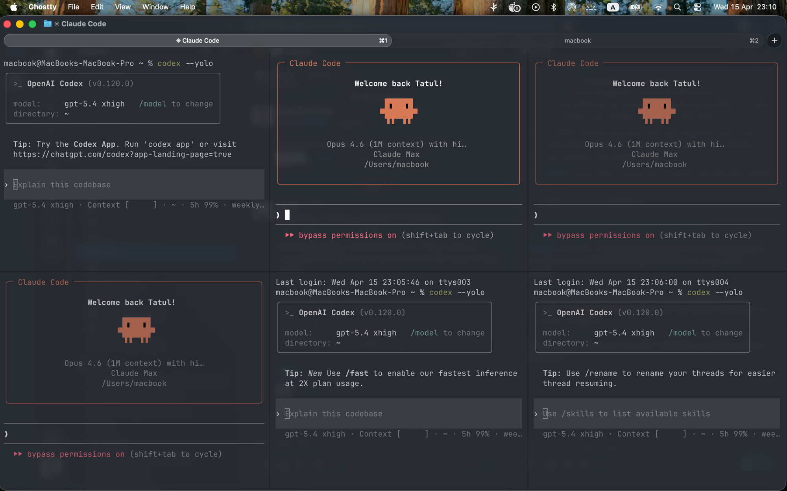
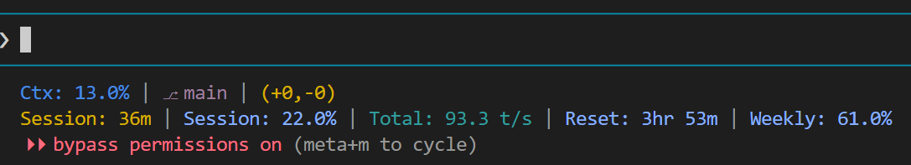

For developers who already use coding agents. Goal: go deeper.
| CLI advantage | Why it matters |
|---|---|
| Automatic reasoning | Model picks thinking depth per turn - no manual toggling |
| Full transcripts | See every tool call, every file read, every decision |
| Inline diffs | Color-coded diffs right in the terminal - review changes before accepting |
Ctrl+B | Background a task, keep working in main session |
cli/commands.md - full shortcut and command reference
VS Code intercepts some keys that Claude Code needs. Fix in keybindings.json:
| Key | Fix | Why |
|---|---|---|
Escape | Send \x1b | Escape works in terminal (vim, menus) |
Ctrl+B | Unbind sidebar toggle | Frees it for background tasks |
Shift+Enter | Send \x1b\r | Newline in prompt without submitting |
Shell aliases save typing:
# ~/.bashrc
alias kachayt='claude --dangerously-skip-permissions'
alias kachaytr='claude --dangerously-skip-permissions --resume'When you're ready to graduate from the VS Code terminal, Ghostty is the current pick. Why it's worth the switch:
Cmd+D / Cmd+Shift+D to split horizontally or vertically. Tile as many Claude Code and Codex sessions side by side as your screen fits.
Four agents, one screen. Ghostty's splits pair perfectly with git worktrees for true parallel work.
Claude degrades well before hitting 100% context. The ~50% rule: if you're past half, start a fresh session.

What you see:
| Situation | Action |
|---|---|
| Switching to unrelated task | /clear |
| Continuing related work | /compact (lossy - prefer fresh session) |
| Quick side question | /btw (reuses prompt cache, cheap) |
| Context past ~50% | Start fresh: claude -n "new-task" |
npx -y ccstatusline@latest.claude/
settings.json # team settings (committed)
settings.local.json # personal overrides (gitignored)
hooks/ # lifecycle scripts
skills/ # reusable workflows
agents/ # specialized Claude instances
rules/ # path-specific instructionsProject-level instructions Claude reads every conversation. Keep under 200 lines. Include what Claude can't guess: build commands, architecture constraints, conventions.
~/.claude/settings.json (global) > .claude/settings.json (project) > .claude/settings.local.json (personal)
Built-in memory lives at ~/.claude/projects/<project>/memory/ as flat markdown files. Persists across conversations - no need to re-explain preferences. Good enough for most use cases.
For more structure, MemPalace provides a local-first knowledge graph with temporal validity windows:
pip install mempalaceThe /claude-automation-recommender plugin scans your codebase and suggests what hooks, skills, and MCPs to set up. See also official docs and the free Anthropic Academy course.
claude -n "feature-auth"Periodically ask Claude:
global/CLAUDE.md - real example of global instructions
global/settings.json - real example of global settings
Shell scripts triggered by Claude Code lifecycle events. Defined in settings.json.
| Event | Use for | Example |
|---|---|---|
| PreToolUse | Block dangerous actions | Block git push, secret file edits |
| PostToolUse | Auto-run after edits | Lint, format, upload configs |
| SessionStart | Orientation briefing | Git status, open PRs, reminders |
| PostCompact | Context recovery | Re-inject critical rules |
| Notification | Alert the user | Windows/macOS toast |
{
"hooks": {
"PreToolUse": [{
"matcher": "Bash",
"hooks": [{ "type": "command", "command": "bash .claude/hooks/guard-push.sh" }]
}]
}
}hooks/ - 5 ready-to-use hook scripts
The spectrum runs from babysitting every action to trusting Claude entirely. Pick the mode that matches your task risk.
| Mode | How to enable | Behavior |
|---|---|---|
| Default | Just run claude | Prompts before every file write and shell command |
| Auto-edit | Shift+Tab to cycle | Edits auto-approved; shell commands still prompt |
| Auto mode (new) | claude --enable-auto-mode | Claude makes permission decisions for you, with safeguards checking each action before it runs |
| Skip permissions | claude --dangerously-skip-permissions | No prompts, no safeguards. Fastest, riskiest. Use in disposable environments or worktrees. |
Announced on Anthropic's X: instead of approving every file write and bash command - or skipping permissions entirely - auto mode lets Claude make permission decisions on your behalf, with safeguards checking each action before it runs. The sweet spot for ambient dev work when you don't want to babysit but don't want to go fully unrestricted either.
Even in --dangerously-skip-permissions, PreToolUse hooks still fire. Use them to block the actions you never want to happen, no matter what:
{
"hooks": {
"PreToolUse": [{
"matcher": "Bash",
"hooks": [{ "type": "command", "command": "bash .claude/hooks/guard-push.sh" }]
}]
}
}guard-push.sh - blocks git push (forces you to push manually)gmail-readonly.sh - blocks Gmail writesrm -rf /, drop table, credential file edits), exit non-zero to cancel--dangerously-skip-permissions inside worktrees or sandboxes, and put hooks in place for the actions that should never slip through - regardless of mode.hooks/guard-push.sh, hooks/gmail-readonly.sh
Markdown files in .claude/skills/. Invoked with /skill-name or auto-triggered by description match.
---
name: ci-status
description: "Check GitHub Actions workflow status"
argument-hint: "[repo] [run-id]"
---
# CI Status Check
## Steps
1. Detect repo...
2. List recent runs...
3. Show failures...You've done something 3+ times. Ask Claude: "Take what we just did and create a reusable skill." Browse Anthropic's official skills, 133 scientific skills, or the Awesome Claude Code Toolkit for inspiration.
skills/ - 6 example skills (morning, ci-status, deploy-watch, literature-review, etc.)
Agents are .claude/agents/*.md files - specialized Claude instances with focused instructions and their own context window.
Ctrl+B to send a task to the background.claude/agents/reviewer.md and Claude auto-delegates matching taskscli/workflows.md - delegation patterns in detail
Enforced 5-phase workflow that prevents the "just start coding" failure mode:
Features: subagent-driven development, git worktree isolation, systematic debugging with root-cause analysis.
/plugin install superpowers@claude-plugins-officialStrips filler while keeping technical accuracy. Research showed brevity constraints improved accuracy by 26 percentage points.
| Level | What it does |
|---|---|
/caveman lite | Drops filler words, keeps grammar |
/caveman full | Fragments, drops articles |
/caveman ultra | Maximum telegraphic compression |
claude plugin marketplace add JuliusBrussee/caveman
claude plugin install caveman@cavemanBrowser automation via MCP. Screenshots, form filling, E2E testing. Useful for visual QA and web scraping tasks.
External tools Claude can call. Lazy-loaded via ToolSearch - hundreds available without context bloat.
cli/plugins.md and cli/mcps.md
Before reaching for plugins, know what Claude Code already ships with - and the short list of extensions worth installing on day one.
| Command | What it does |
|---|---|
/review | Review a pull request |
/simplify | Review changed code for reuse, quality, and efficiency, then fix any issues found |
Both are shipped skills - auto-triggered by description match or invoked directly. No /plugin install needed, works out of the box.
/code-review plugin/code-review runs 4 parallel agents (CLAUDE.md compliance, bug scan, git-blame context) with findings scored 0-100. Reach for it on larger diffs or when you want structured scoring; the built-in /review is lighter and usually enough for a single PR.
| Extension | Why | Install |
|---|---|---|
| Context7 (MCP) | Live library docs - kills hallucinated APIs. Highest-ROI MCP for any developer. | claude mcp add context7 -- npx -y @upstash/context7-mcp@latest |
| GitHub app | @claude in issues/PRs, auto PR reviews, per-repo instructions | /install-github-app |
| claude-code-setup | /claude-automation-recommender scans your repo and suggests hooks, skills, MCPs | /plugin install claude-code-setup |
For Superpowers, Caveman, Playwright, and MemPalace see section 7.
code -> /simplify -> /review (built-in only, fast)code -> /code-review -> /simplify (plugin, scored findings)cli/plugins.md, cli/mcps.md
| Command | What |
|---|---|
/btw | Side question - reuses prompt cache, cheap. Won't derail main task. |
/rename | Name your session for easy resume later |
/color | Set accent color (nice for multiple terminals) |
/model | Switch model mid-session (opus/sonnet/haiku) |
/cost | Show token usage and cost |
/context | Visualize what's filling your context window |
| Key | What |
|---|---|
Shift+Tab | Cycle permission modes |
Esc / Esc Esc | Stop generation / rewind |
Ctrl+O | Toggle verbose (see thinking) |
Ctrl+B | Background current task |
Ctrl+G | Open prompt in external editor |
Ctrl+R | Search command history |
/effort low for simple tasks. /effort high for complex reasoning. Write ultrathink in your prompt for maximum thinking on a single turn.
cli/commands.md - complete reference
Plan (plan mode) -> Review plan -> Code (auto mode) -> Review (NEW session)Always review in a fresh session. The coding session has accumulated bias.
AskUserQuestion tool)Ask Claude: "use the AskUserQuestion tool to interview me about this feature - spec, setup, edge cases, anything you need." You get a structured multiple-choice questionnaire (with an "Other" option) instead of a chat wall. Claude builds its mental model properly before writing a line of code.
Plan mode uses this tool by default to clarify before finalizing the plan - but you can invoke it directly in any session. Best paired with: answer the questions, then start a fresh session for implementation so the interview context doesn't bloat.
Karpathy's automated experiment loop - works for any task with a measurable metric:
modify -> evaluate -> keep/discard -> repeatIn his case: 83 runs overnight, 15 kept, 11% performance gain. Use Claude Code's headless mode to automate:
claude -p "try a different approach to X, run tests, report results" > run_N.txtcli/workflows.md, cli/tips.md
A git worktree is a second (or third, or tenth) working directory attached to the same repository, each checked out to a different branch. Same .git, separate files on disk. Built into git itself - no extra tooling.
That small feature is surprisingly powerful: you can run multiple coding agents on the same repo at once, each in its own folder, and their edits physically can't collide. No stashing, no branch-switching, no "wait, which branch am I on" - just parallel work that never interferes.
In practice: just ask - "implement feature X in a worktree and open a PR." Claude Code (or Codex) spins up an isolated folder on its own branch, does the work there, and pushes a PR when done. Your main checkout stays untouched, and you can kick off the next feature in parallel.
/remote-control, /rc)Hand off your live Claude Code session to the Claude app on another device - phone, tablet, another browser. The session keeps running; you just change where you're watching from.
Example: kick off a long task, run /rc, go to lunch. Check progress, approve prompts, and keep chatting from your phone. Walk back to the desk and pick up in the same terminal - nothing interrupted.
cli/resources.md - full link collection with all repos mentioned above
Claude is named after Claude Shannon (1916-2001), the father of information theory.